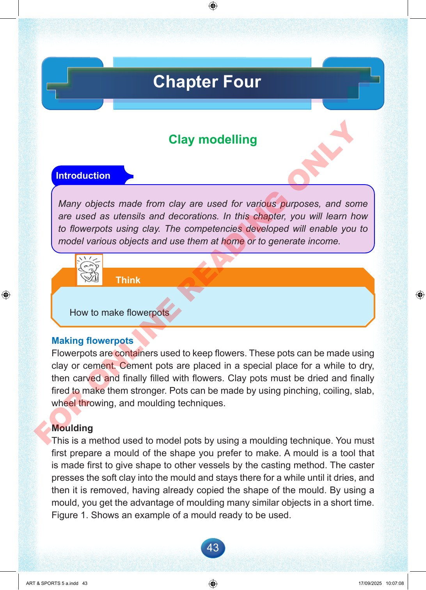

43
Chapter
Four
Clay
modelling
Introduction
Many
objects
made
from
clay
are
used
for
various
purposes,
and
some
are
used
as
utensils
and
decorations.
In
this
chapter,
you
will
learn
how
to
flowerpots
using
clay.
The
competencies
developed
will
enable
you
to
model
various
objects
and
use
them
at
home
or
to
generate
income.
Think
How
to
make
flowerpots
Making
flowerpots
Flowerpots
are
containers
used
to
keep
flowers.
These
pots
can
be
made
using
clay
or
cement.
Cement
pots
are
placed
in
a
special
place
for
a
while
to
dry,
then
carved
and
finally
filled
with
flowers.
Clay
pots
must
be
dried
and
finally
fired
to
make
them
stronger.
Pots
can
be
made
by
using
pinching,
coiling,
slab,
wheel
throwing,
and
moulding
techniques.
Moulding
This
is
a
method
used
to
model
pots
by
using
a
moulding
technique.
You
must
first
prepare
a
mould
of
the
shape
you
prefer
to
make.
A
mould
is
a
tool
that
is
made
first
to
give
shape
to
other
vessels
by
the
casting
method.
The
caster
presses
the
soft
clay
into
the
mould
and
stays
there
for
a
while
until
it
dries,
and
then
it
is
removed,
having
already
copied
the
shape
of
the
mould.
By
using
a
mould,
you
get
the
advantage
of
moulding
many
similar
objects
in
a
short
time.
Figure
1.
Shows
an
example
of
a
mould
ready
to
be
used.
ART
&
SPORTS
5
a.indd
43
ART
&
SPORTS
5
a.indd
43
17/09/2025
10:07:08
17/09/2025
10:07:08
F
O
R
O
N
L
I
N
E
R
E
A
D
I
N
G
O
N
L
Y